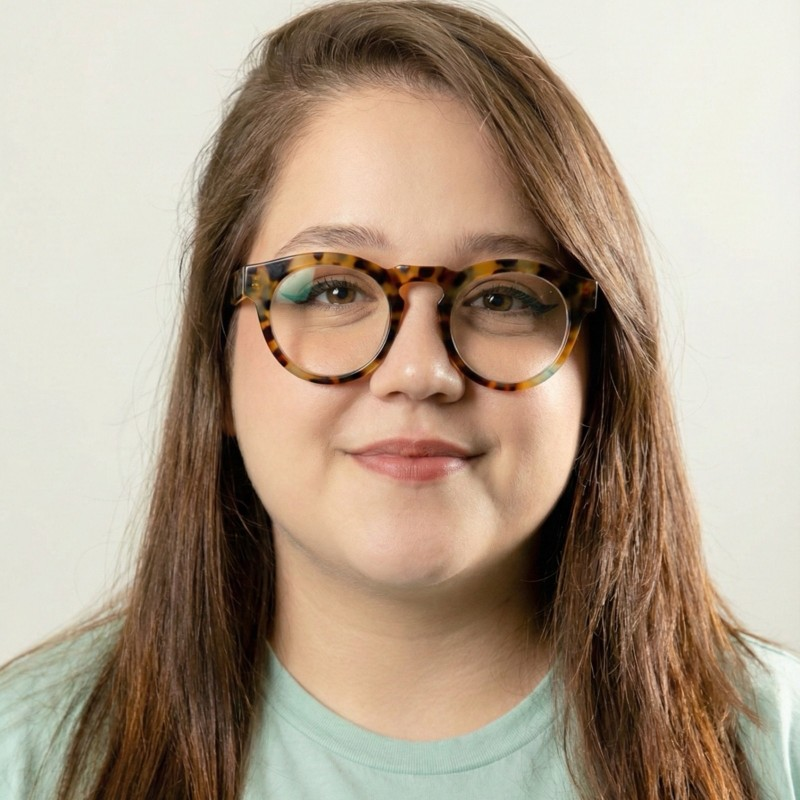

Inovação educacional · IA aplicada · Gestão de projetos
Sou Juliana Tavares. Há 9 anos trabalho na interseção entre pedagogia e tecnologia, transformando problemas educacionais em plataformas, automações e experiências de aprendizagem. Quando falta ferramenta, eu mesma construo.
Uma seleção do que construí nos últimos anos. Clique em qualquer projeto pra ver o case completo, com fotos, contexto e resultados.
PMO · Gestão de programa
Gestão completa de um programa de desenvolvimento de competências para mais de 700 estudantes em 4 cidades: currículo, indicadores, governança e melhoria contínua.
Ver case
Plataforma · IA · Dados
Plataforma full-stack própria que acompanha em tempo real um programa com mais de 700 estudantes em 4 cidades, integrando IA, Monday.com e Google Sheets.
Ver case
Produto · IA pedagógica
IA pedagógica integrada à LMS da Descomplica, criada pra adaptar conteúdo ao perfil de cada aluno com curadoria automática de exercícios.
Ver case
Formação · Metodologias ativas
Formação presencial pros orientadores do Ismart, com aprendizagem baseada em problemas, convidado externo e certificação digital verificável.
Ver case
Formação continuada · LMS
Programa de formação continuada com LMS própria e sala de aula invertida pro time de monitores da Descomplica, com 92,32% de reactions positivas.
Ver case
Gestão · Escala
Maior projeto anual da Descomplica, liderado como Project Manager: mais de 7 times coordenados em 2 meses e a primeira resolução extraoficial do ENEM publicada com IA.
Ver case
Todo projeto meu passa pelo mesmo ciclo, inspirado no que a boa pedagogia já sabe há tempos.
Antes da ferramenta, o diagnóstico. Converso com quem vive o problema, mapeio o processo real e só depois desenho a solução.
Dashboard, automação, formação ou currículo: construo com as mãos, itero rápido e uso IA como ferramenta de trabalho, não como promessa.
Indicador não é enfeite de relatório. Acompanho dados de uso, satisfação e desempenho pra decidir o próximo passo com evidência.
Trabalho há 9 anos no mercado de educação, com passagens por edtechs, terceiro setor e sistemas de ensino. Nesse caminho, encontrei meu lugar na interseção entre pedagogia e tecnologia: entender o problema educacional a fundo e construir a solução técnica pra resolver.
Hoje atuo como Analista Sênior de Inovação e Desenvolvimento no Ismart (Fundação Telles), onde lidero como PMO um programa de desenvolvimento de competências para mais de 700 estudantes de baixa renda em 4 cidades do Brasil.
Meu diferencial é aplicar inteligência artificial em contextos educacionais de forma prática: plataformas de analytics, automação de monitoramento pedagógico e feedback individualizado em escala. Sou mega entusiasta de qualquer assunto interessante e intelectualmente curiosa. Sempre aberta pra boas conversas!

Depoimentos de quem já foi minha líder, minha liderada e minha parceira de trabalho, direto do LinkedIn.
Seu crescimento profissional foi evidente, sempre pautado por responsabilidade, proatividade e liderança. Recomendo demais a Ju, com total confiança para atuar em contextos que exijam liderança, visão estratégica e comprometimento com a educação de qualidade.Priscila Campos Supervisionou Juliana diretamente · Gestão Operacional e de Projetos
Juliana sempre foi uma líder inspiradora. Se preocupa com os seus liderados, tem uma comunicação excelente e uma liderança transparente. Trabalhar com a Juliana é saber que você está em um espaço seguro e confiável.Yngrid Antonio Liderada por Juliana · Supervisora Pedagógica
A Ju sempre demonstrou um olhar único para a educação, trazendo ideias criativas e inovadoras que realmente fizeram a diferença no nosso dia a dia. Além da competência técnica, ela é extremamente parceira e proativa.Rafaela Salomão Colega de equipe · Projetos e Plataformas Educacionais
Se eu pudesse defini-la em uma expressão seria "força de vontade". Admiro muito a Juliana pela capacidade de levar a gestão da equipe de uma forma leve e descontraída, fazendo com que seus liderados sintam-se abraçados e cativados.Madjory Almeida Coordenadora de Conteúdo e Produtos Digitais Educacionais
Se você trabalha com inovação educacional, EdTech ou IA aplicada à aprendizagem, adoraria trocar uma ideia.